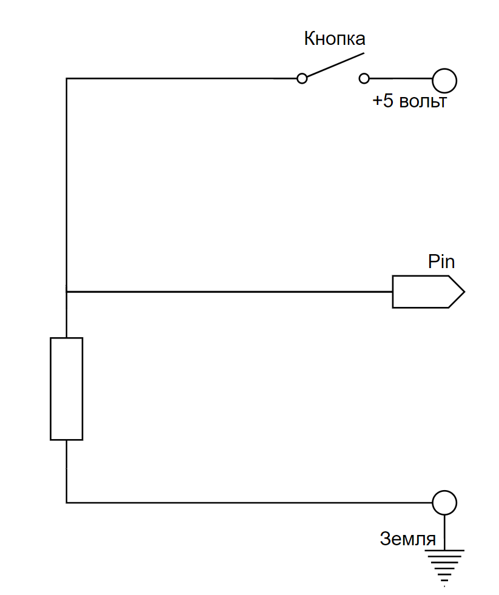

Подключение кнопки на ESP8266
27 октября 2020
< 100 дочитываний
1,5 мин.
Сегодня мы поговорим о подключение пятивольтовой кнопки к 3,3 вольтовому ESP8266! Конечно это шутка, но основанная на реальной теме обсуждения в одном из форумов на arduino.ru
А если серьезно, то подключить кнопку на ESP8266 не просто, а очень просто, но нужно помнить и соблюдать несколько условий.
1) Помним про пины! Дело в том что не к каждому пину можно подключить кнопку (или это возможно, но не совсем обычным способом)
2)Помним про подтягивающие резисторы их у обычного (стандартного) модуля ESP8266 (ESP-01, ESP-12 и их модификации) нет, но они есть у разных "продвинутых" модулей WeMos D1 Mini Pro, NODEMCU (на основе 12E) и др.
О пинах
А теперь подробнее о "служебных" пинах. О тех пинах которые используются модулем на специфические нужды.
Для подтяжки используем стандартные резисторы от 4,7 до 50 кОм
Подтягивающие (стягивающие) резисторы.
Следующим пунктом поговорим о подтягивающих (стягивающих) резисторах.
Вот отдельная статья: "Подтягивающий (стягивающий), токоограничивающий резисторы. Зачем, для чего, почему и конечно, что делать?"
Тут повторение, кратко
Подтягивающий резистор должен быть в районе 1кОм-10 кОм.
Вот схемы с подтяжкой к земле

Подтяжка к земле
и подтяжкой к питанию
Подтяжка к питанию
Еще на всякий случай добавим токоограничивающий резистор, это не обязательно именно для кнопки, но хуже не будет.
Я использовал резистор от 200 Oм до 2 кОм
R2 на схеме ниже
А вот так будем выглядеть все вместе подтягивающий (стягивающий) резистор и токоограничивающий резистор.
Подтягивающий к земле и токоограничивающий резисторы
Подтягивающий к питанию и токоограничивающий резисторы